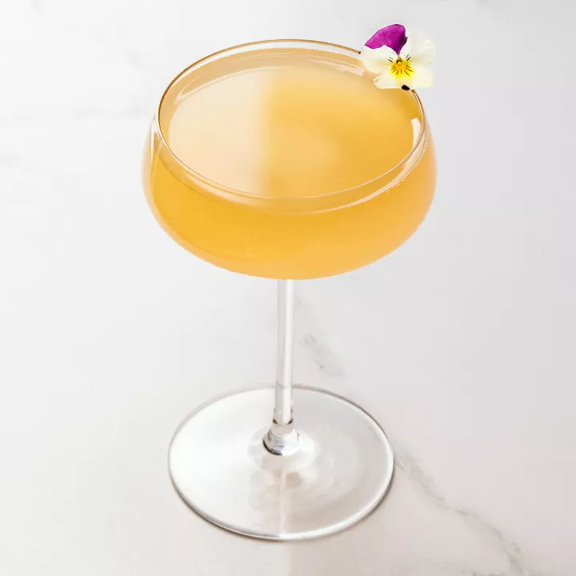

Fleur de Paradis

Description
This gin based drink is bubbly and botanical. It is very fancy
with the edible pansy as a garnish. Perfect for a Mother's Day brunch.
Drink while you're feeling celebratory!
Ingredients
- 2 ounces gin
- 3/4 ounce elderflower liquor
- 1/2 ounce grapefruit juice
- 1/2 ounce lemon juice
- 1/4 ounce simple syrup
- 1 dash orange bitters
- chilled sparkling wine
- Garnish: edible pansy
Steps
- Add the Plymouth gin, elderflower liqueur, grapefruit juice, lemon juice, simple syrup and orange bitters into a shaker with ice and shake until well-chilled.
- Strain into a coupe glass
- Top with sparkling wine.
- Garnish with an edible pansy for that oh so fancy look.